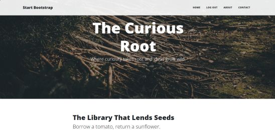

Flask Blog Website
I used Flask and SQLAlchemy to build a multi-user blog with authentication and session management. I implemented user registration, login, and logout, linked blog posts to their authors through database relationships, protected routes so only logged-in users could access certain pages, and enforced permissions so that only post authors could edit or delete their own content.